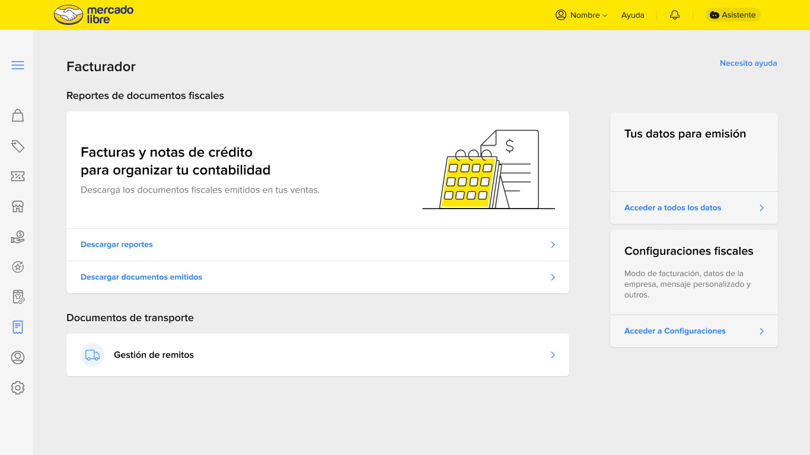
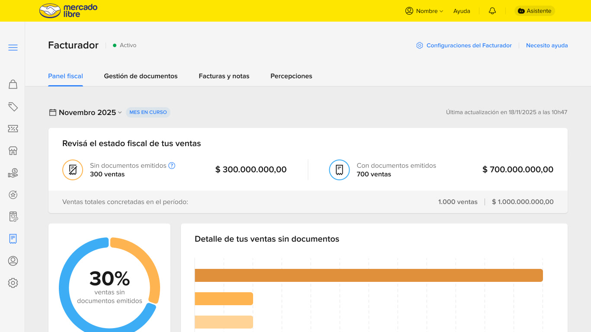

01PrincipiosPrinciples
Cuatro ideas que el sistema no negocia.
Four ideas the system never trades away.
Claro, con grano de papel
Light, with a paper grain
El fondo es un hueso frío con un ruido fino, como papel impreso. Las pantallas de interfaz blanca se separan con un borde de 1px, sin marco ni sombra y sin fondo oscuro.
The background is a cool off-white with a fine grain, like printed paper. White interface screens separate with a 1px border, with no frame, no shadow and no dark background.
Letras que se leen desde lejos
Letters you can read from afar
Títulos y texto de una misma familia pensada para pantalla, con aperturas abiertas y seguimiento positivo de +0,012em. Nada por debajo de 13px.
Titles and text from one family made for screens, with open apertures and positive tracking of +0.012em. Nothing below 13px.
La jerarquía la hace la letra
Type makes the hierarchy
Las secciones son capítulos numerados sobre un filete negro, sin cajas: etiqueta mono, cifra o titular grande y un filete fino. Los pies de figura son texto y las anotaciones abren la pantalla para ver cómo funciona por dentro.
Sections are numbered chapters on a black rule, with no boxes: mono label, large figure or headline and a hairline. Figure captions are text and annotations open the screen to show how it works inside.
Una sola fuente de verdad
A single source of truth
Todo sale de los tokens de :root. Un componente nunca inventa un color, un tamaño ni un radio: los consume.
Everything comes from the :root tokens. A component never invents a color, size or radius: it consumes them.
02ColorColor
Un resaltador sobre hueso frío, y tinta azul para anotar.
A highlighter on cool off-white, and blue ink to annotate.
Regla del resaltador: se usa una sola vez por proyecto, en la idea que debe recordarse. Marca la frase y el numeral de ese capítulo; en el resto, el numeral va en tinta.
Highlighter rule: it is used only once per project, on the idea to remember. It marks that chapter's phrase and numeral; elsewhere the numeral stays in ink.
Superficie y textoSurface and text Acento y semánticaAccent and semantics Contraste medido, en vivoMeasured contrast, live| Texto | Text | bg-0 | bg-1 | bg-2 | bg-3 |
|---|
Se calcula en esta página con la fórmula WCAG a partir de los tokens. AA exige 4,5:1 en texto normal; el texto terciario no se usa sobre bg-3.
Computed on this page with the WCAG formula from the tokens. AA requires 4.5:1 for normal text; tertiary text is not used on bg-3.
03TipografíaTypography
Tres voces: una que titula, una que explica y una que mide.
Three voices: one that titles, one that explains and one that measures.
Radio Canada Big
Humanista, de ritmo propio y letras abiertas. Se eligió frente a ocho alternativas sans serif, la más cercana a la que referenciaste.
Humanist, with its own rhythm and open letters. Chosen over eight sans-serif alternatives, the closest to the one you referenced.
Radio Canada
La hermana de los títulos, hecha para leer. Un solo origen tipográfico: el ritmo de los títulos y el del cuerpo coinciden.
The titles' sibling, made for reading. A single typographic origin: the rhythm of titles and body match.
Hyperlegible Mono
Diseñada para que 0 y O, 1 e l no se confundan. Siempre en mayúsculas y con +0,06em para etiquetas y cifras.
Designed so 0 and O, 1 and l are never confused. Always uppercase with +0.06em for labels and figures.
04Espacio, forma y movimientoSpace, shape and motion
Una base de 4 píxeles, cuatro radios y dos tiempos.
A 4-pixel base, four radii and two durations.
EspacioSpace RadiosRadii Movimiento y ruidoMotion and grain0,15 s para cambios de estado en controles y 0,3 s para aparecer y moverse. Todo se detiene con «reducir movimiento». El grano de papel es un solo token, --grain-opacity, y está fijo en 0,07.
0.15 s for state changes in controls and 0.3 s for appearing and moving. Everything stops under "reduce motion". The paper grain is a single token, --grain-opacity, fixed at 0.07.
05ComponentesComponents
Cada pieza existe una sola vez y se reutiliza en los casos.
Each piece exists only once and is reused across the cases.
EtiquetaTag.badge · .kt · .tag · .chip — una familia: mono, 13px, mayúsculas. El color solo significa algo: verde es hecho, azul es observación, ocre es hipótesis.
.badge · .kt · .tag · .chip — one family: mono, 13px, uppercase. Color only ever means something: green is fact, blue is observation, ochre is hypothesis.
Control segmentadoSegmented control.rc-tabs · .pv-tabs · .pv-seg · .lg-sw · .lang · .tab — el seleccionado siempre se invierte: tinta de fondo, texto claro. En la barra de pestañas de cada caso, el número pasa a resaltador. Pruébalo.
.rc-tabs · .pv-tabs · .pv-seg · .lg-sw · .lang · .tab — the selected one always inverts: ink fill, light text. In each case's tab bar the number turns highlighter yellow. Try it.
Composición tipográfica · sin cajaTypographic composition · no box5 sites5 sites
Argentina
4 métricas4 metrics
¿Qué requiere atención?
What needs attention?
¿Qué hago con cada venta?
What do I do with each sale?
.ed-item · .ed-big · .ed-flow — la jerarquía la hace la letra: etiqueta mono, cifra de --fs-stat y un filete de 1px. Sin fondo, sin borde de caja, sin sombra. Retira la tarjeta (.card) y las 14 superficies que unificó.
.ed-item · .ed-big · .ed-flow — type makes the hierarchy: mono label, a --fs-stat figure and a 1px rule. No fill, no box border, no shadow. It retires the card (.card) and the 14 surfaces it had unified.

La figura (.shot) ya no lleva marco ni sombra: la separa un borde de 1px. Su pie es texto corrido y numera cada figura sola (Fig. 1, Fig. 2…). Clic para ampliar.
The figure (.shot) no longer has a frame or a shadow: a 1px border separates it. Its caption is running text and numbers each figure by itself (Fig. 1, Fig. 2…). Click to enlarge.

La tinta azul abre la pantalla para informar; el resaltador marca lo que cambió. El número va en un cuadro amarillo, como la numeración de un esquema.
Blue ink opens the screen to inform; the highlighter marks what changed. The number sits in a yellow square, like the numbering of a diagram.
Sello de casoCase seal
.sello — disco de tinta de --sz-sello con «Caso» y el número. Cuelga de la esquina de la imagen de portada y es lo único fijo: la imagen cambia en cada caso. Idea tomada del sello circular de las portadas de étapes:.
.sello — an ink disc of --sz-sello with “Case” and the number. It hangs from the corner of the cover image and is the only fixed element: the image changes in every case. An idea taken from the circular seal on étapes: covers.
Doce columnas. Cada capítulo va sobre un filete negro de 2px, con el número en Radio Canada Big subrayado de resaltador y sin rótulo «Cap.». En móvil (≤860px) pasa a una sola columna. En cualquier caso, la tecla G dibuja la rejilla encima. Referencia: «una nueva rejilla modulable para las direcciones de arte venideras», rediseño de étapes: (Cylindre, 2012).
Twelve columns. Each chapter sits on a 2px black rule, with the number in Radio Canada Big underlined in highlighter and no “Cap.” label. On mobile (≤860px) it collapses to one column. On any case, the G key draws the grid on top. Reference: “a new modular grid for future art directions”, the étapes: redesign (Cylindre, 2012).
Línea de tiempoTimeline- Capítulo unoChapter oneCada ronda es una escena con fecha.Each round is a dated scene.
- Capítulo dosChapter twoEl punto marca el momento; el hilo, el orden.The dot marks the moment; the thread, the order.
06Dónde se usaWhere it is used
Si un componente existe, se usa en todas partes.
If a component exists, it is used everywhere.
| Componente | Component | Páginas | Pages | Unificó | Unified |
|---|---|---|---|---|---|
| Hero | 6 / 7 | 2 variantes en 1; titular de una sola palabra2 variants into 1; one-word headline | |||
| Etiqueta | Tag | 6 / 7 | 5 clases en 1 familia5 classes into 1 family | ||
| Control segmentado | Segmented control | 7 / 7 | 7 controles en 17 controls into 1 | ||
| Composición tipográfica | Typographic composition | 6 / 7 | Retira la tarjeta: 14 superficiesRetires the card: 14 surfaces | ||
| Figura y pie | Figure and caption | 3 / 7 | Retira el marco con sombra y la barra de títuloRetires the shadowed frame and the title bar | ||
| Anotación | Annotation | 2 / 7 | 4 cajas en 14 boxes into 1 | ||
| Sello de caso | Case seal | 5 / 7 | NuevoNew | ||
| Rejilla de 12 columnas | 12-column grid | 6 / 7 | NuevoNew |
HechoConteo del 9 de octubre de 2026 sobre el HTML estático de las 7 páginas; los módulos que se montan con JavaScript no se cuentan. Antes de unificar había 26 colores, 38 tamaños de letra y 26 radios distintos; la v2 llegó a 12 colores, 9 tamaños y 4 radios, más los tamaños relativos al contenedor de las anotaciones. La capa editorial añadió tres tokens: --fs-stat, --fs-numeral y --sz-sello.
FactCounted on 9 October 2026 over the static HTML of the 7 pages; modules mounted with JavaScript are not counted. Before unifying there were 26 colors, 38 font sizes and 26 distinct radii; v2 reached 12 colors, 9 sizes and 4 radii, plus the container-relative sizes of the annotations. The editorial layer added three tokens: --fs-stat, --fs-numeral and --sz-sello.